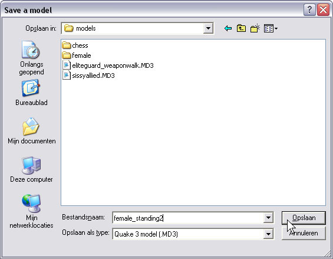

| Exporting playermodels to MD3 | |
| The playermodels used in Wolfenstein-ET/RTCW are very different from the MD3-models. Playermodels have a skeleton & bones which animate. The model itself (the "skin" You see) follows the movement of the animated skeleton. MD3-models are much simpler and do not use this kind of animation. Normally it is not possible to use playermodels in a map You're making in Radiant. This tool lets You convert playermodels to MD3-models, which in turn can be used in Radiant as a misc_gamemodel entity. You can load two types of playermodels: MDM/MDX or MDS. Note: You have to load an MDM/MDX-pair of files in 2 steps, first the model (MDM), then the animation (MDX). All ET-playermodels share the same animations (body.mdx). | |
| An MDS-file contains a model and its animation, both in 1 file. | |
| Selecting a range of frames | |
| Select the animation You want to export as MD3. The range i have used in this example runs from frame 952 to 1132. It is a looped animation of a relaxed standing pose. You can choose to select any range You like, but be aware that the final filesize of the exported model can become quite large. | |
| Note: If You do not want to use a skin for the loaded model, You can skip a few steps now, and go directly to step: "Exporting to MD3" | |
| Using a skin | |
| Playermodels are not textured, so they will be rendered all white.. They need to get a skin-file assigned, containing a reference to a shader for every surface in the model. (You can see that the shadername of the surfaces are all empty). Note: For this tool it is optional to load a skin-file now; It will still export the model. But since the final (in-game) model needs to be textured anyway, and needs a skin assigned in Radiant otherwise, i will load the skin now for demonstration purposes. A skin-file can be loaded from the 'Surfaces'-Tab (or via the menu if You want): | |
| Loading the skin-file | |
| The model in this example has many skins to choose from, i selected one, and load it. | |
| Skinned model, but still no shadernames | |
| By now You can see a textured model on the 'View'-Tab. Also the 'Surfaces'-Tab shows the textures that are used on the model (and from where they have been obtained). The needed textures have been provided by the skin-file. However, the model does still not have any shadernames assigned to its surfaces. This means that You would still have to set a skin for the model in Radiant if You want to see a textured model in-game too. The just loaded skin-file is only used by the ET-Model-Tool. | |
| Note: If You do not want to embed the skin, You can skip a few steps now, and go directly to step: "Exporting to MD3" | |
| Embedding skins | |
| This tool is able to copy the shaders supplied by the skin-file into the model. This way the seperate skin-file is no longer needed in the distribution of Your model. Note: It is optional to embed a skin into a model; This tool will still export the model. For demonstration purposes i will embed a skin now. To make the skin permanent in the model, select the choice from the menu: "Embed skin into model..." | |
| Confirm the embed: | |
| The skin is now permanent | |
| When the skin-data is copied into the model, You will see that the surfaces now have been assigned a shadername. | |
| Good looking | |
| After assigning a skin to a playermodel You can see the results on the 'View'-Tab. This looks nice.. | |
| Exporting to MD3 | |
| Now that the model is prepared for exporting, it''s time to select the choice from the menu: "Export frames-range to MD3..." | |
| Confirm the export: | |
| Saving the model | |
| Give the MD3 a name and save the file. Now go test it in Radiant.. :-) | |
|  | |